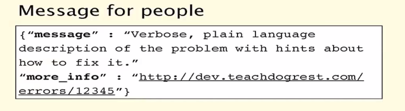

The name "Representational State Transfer" is intended to evoke an image of how a well-designed Web application behaves: a network of web pages (a virtual state-machine), where the user progresses through the application by selecting links (state transitions), resulting in the next page (representing the next state of the application) being transferred to the user and rendered for their use.
architectural style for distributed hypermedia systems without "official" standard
HTTP Methods as uniform interface
URL identifies single resource
Mapping methods to actions
HATEOAS
Verbs are bad, nouns are good
Two base URLs
Relation between resources
Route::delete('lists/{id}', function($id)...
Route::post('lists/{id}/tasks', function($id)...
Route::get('lists/{list_id}/tasks/{id}', function($list_id, $id)...
Keep simple things simple, and complex possible
GET lists/1/tasks?status=done
array of objects [{},{}..]
empty array []
object {}
Help users
Proper status code
Be verbose

?v=1.0
v1/users/1574083/
Rotten Tomatoes
api.rottentomatoes.com/api/public/v1.0/lists.json
Laravel route group prefix
Route::group(array('prefix' => 'v1', 'before' => 'api.auth|api.limit'), function()
{
// Get all lists
Route::get('lists', function()
{
$lists = Auth::user()->tasklists;
return Response::json($lists->toArray());
});
/joe.smith/friends?fields=id,name,picture
Refinery29
/aggregators?columns=id,name&with=posts:0:100
Youtube
?fields=title,media:group(media:player,media:thumbnail)
General
limit, offset
count, min_tag_id, max_tag_id
count, since_id, max_id
Defaults (depends on data size)
?limit=10&offset=0
pagination": {
"next_url": "https://api.instagram.com/v1/users/self/feed?access_token=514638234.1fb234f.52ff15cc9344483b870677a0f47713d6&max_id=799946746008638427_1381716219",
"next_max_id": "799946746008638427_1381716219"
}
"links": {
"movies": "http://api.rottentomatoes.com/api/public/v1.0/lists/movies.json",
"dvds": "http://api.rottentomatoes.com/api/public/v1.0/lists/dvds.json"
}
{
"links": {
"posts.author": {
"href": "http://example.com/people/{posts.author}",
"type": "people"
},
"posts.comments": {
"href": "http://example.com/comments/{posts.comments}",
"type": "comments"
}
},
"posts": [{
"id": "1",
"title": "Rails is Omakase",
"links": {
"author": "9",
"comments": [ "5", "12", "17", "20" ]
}
}]
}
Support both if needed
/users.json
/users?type=json
/users?format=xml
Accept: application/json
Oauth
The OAuth 2.0 authorization framework enables a third-party application to obtain limited access to an HTTP service.